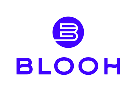

There are many brands that are committed to sustainability.
Here are a few reputable brands and organisations.
1.KOTN is a Canadian-based fashion brand that sources its cotton from Egypt. Founded by three friends—Ben, Mackenzie, and Rami—KOTN was inspired by Rami's experiences during his trip back to his family home in Egypt and living in a cotton farming community in the Nile Delta for six months. KOTN sources its materials from local Egyptian cotton farms, uses a pricing method that provides farmers with compensation 35% above market rates, offers subsidies during difficult market conditions, and helps fund and build primary schools in the Nile Delta by partnering with local NGOs and donating a portion of proceeds from each order. To date, they have built 21 schools.

2.Blooh is a US-based Kenyan jewelry brand. The jewelry is sourced and handmade in workshops in Nairobi, Kenya, as well as vetted global partners who are committed to Blooh's priority of worker wellbeing, fair wages, and sustainability. They partner with small local businesses to limit resource use like water during production. All materials are locally sourced and products are made to order to reduce waste. To reduce plastic waste, shipping packaging is made of recyclable and compostable materials. From humble beginnings in 2021 partnering with local artisans in Nairobi, they have grown to multiple local and global workshops, empowering communities by allowing artisans to set their own rates.
3.Cuyana is a US-based handbag brand. Their products are 100% made from sustainably certified materials. They are committed to responsible production, selling through 90% of the products they make. The bags are handmade and all materials are responsibly sourced. They partner with craftsmen and women globally, from Ecuador to Italy. Their products are made with care and built to last.
4.Pact is a US-based clothing brand. They partner with Fair Trade USA, Global Organic Textile Standard, and SimpliZero. They ensure their factories provide safe working conditions. Their shipping materials are made from recycled paper. Their organic cotton is sourced from India, with most manufacturing happening in the world’s first fair trade-certified factory in Kolkata, India. Pact pays over 1 million dollars in fair trade premiums to ensure safe working conditions and provide development funds to on-site workers.
Want to learn more about Sustainable Fashion? Click here
Complete this quick form to pledge to contribute to sustainability.
Message
Click here to learn more about ways to help our planet.